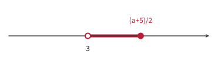

ホーム ＞ 数学I ＞ 1次不等式
連立不等式\[\begin{cases}5x-2>3x+4\\ 2x-a\leqq5\end{cases}\]が解をもつような定数 \(a\) の値の範囲を求めよ。
各不等式を \(x\) について解き、共通部分が空でない条件を考える。端点が一致するときは、等号が両方に入っているか確かめる。
\(x>3\)（3は含まない）と \(x\leqq\dfrac{a+5}2\)（右端を含む）が重なるには、右端が3より大きいことが必要（図）。

\(\dfrac{a+5}2=3\)（\(a=1\)）のとき、解は \(x>3\) かつ \(x\leqq3\)。これをみたす \(x\) はない。よって \(a=1\) は不適。
【答案（テストに書く形）】
答